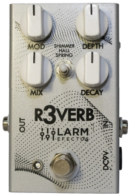
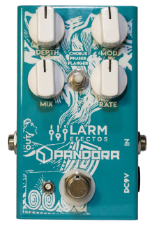
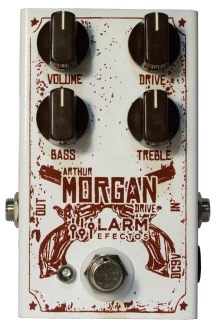

R3verb Pedal de efecto Reverb digital de 3 modos. Hall, Spring y Shimmer. Incorpora un DSP (Procesador digital de señal) con resolución de conversión de 24 Bits. 
Pandora Pedal de modulaciones de 3 programas. Chorus, Phaser y Flanger. Analog Dry Through: La señal Dry no se digitaliza, permanece analógica. 
Morgan Overdrive de ganancia baja-media con controles de EQ activos en bajos y agudos. Permite un audio rítmico al borde de romper, o un sonido más pesado. 